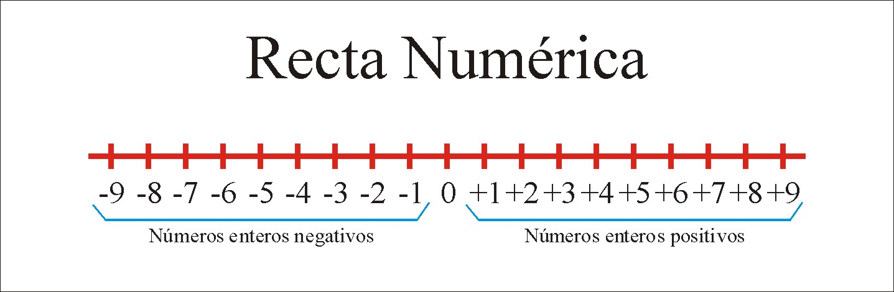
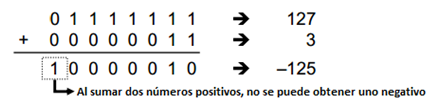

Numeros enteros
Cuando el minuendo es más pequeño que el sustraendo, la resta no puede realizarse con números naturales. Sin embargo, hay situaciones en las que es útil el concepto de números negativos. Los números enteros, representado por el símbolo ZZ, por su parte son un conjunto bastante amplio. Estos incluyen a los números naturales que sirven para delimitar los elementos que se encuentran dentro de un conjunto; también incluyen al cero, que no es un número en sí, pero expresa la ausencia de cantidad o un conjunto vacío y sin elementos contables; y dentro de los números enteros también se pueden encontrar a los números opuestos de los números naturales.
¿Qué son los numeros enteros?
¿Qué son los números enteros?, para entender lo qué son y para qué sirven este conjunto de números enteros, antes tenemos que saber lo que son los números. Estos son símbolos que nos permiten enunciar una cantidad determinada, ya sea de forma oral o escrita. Estos símbolos tienen su nomenclatura escrita de forma universal para que se pueda expresar en cualquier idioma. Pues bien, dentro estos simbolos existen numeros negativo y aqui es donde entran en juego los numeros enteros. Estos nos sirven para indica cantidades negativas. Si recordamos, los numeros naturales nos servian para indicar la cantidad de ciertos elementos. Los numeros enteros abarcan los numeros naturales y ademas sus negativos.
Como expresarlos en informatica
Un tipo de dato entero en computación es un tipo de dato que puede representar un subconjunto finito de los números enteros. El número mayor que puede representar depende del tamaño del espacio usado por el dato y la posibilidad (o no) de representar
números negativos. Los tipos de dato entero disponibles y su tamaño dependen del lenguaje de programación usado así como la arquitectura en cuestión. Por ejemplo, si para almacenar un número entero disponemos de 4 bytes de memoria tememos que:
4 Bytes = 4x8 = 32 bits
Cuantos mas bits, mas valores podremos representar.
Overflow
El Overflow se produce cuando el ordenador se intenta asignar a un entero un valor que está fuera del rango de los valores que se pueden representar se produce un fallo. lo habitual es que el programa siga funcionando como si nada hubiera pasado, pero el nuevo valor quedaría establecido en 0, si el Overflow se produce en un entero sin signo; y si se produce en un entero con signo.
